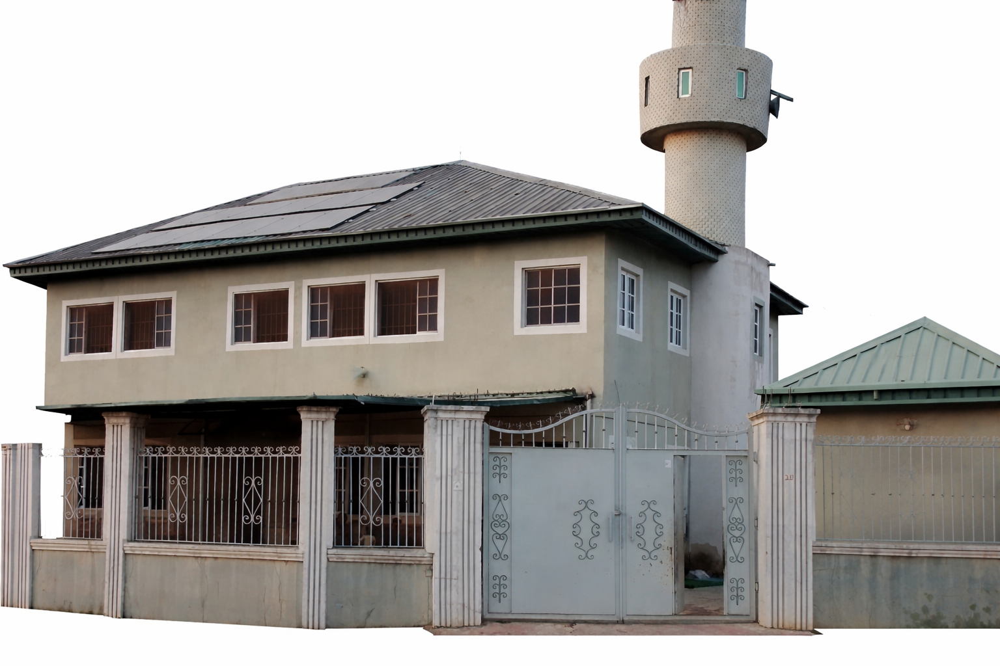

A place of worship, learning, and community development.
وَأَقِيمُوا الصَّلَاةَ وَآتُوا الزَّكَاةَFSSSMC Mosque is a center for worship, learning, and community development. A spiritual home dedicated to prayer, knowledge, unity, and service to the community.
The organisation Structure of the Masjid is designed for smooth administration without undermining the authority of Imam as the supreme authority according to the Sunnah of the Prophet (PBOH). The organisation Structure is divided into two: A. Spiritual Structure headed by Imam B. Administrative Structure headed by Amir. For the effectiveness and efficiency of the implementation of executive decisions and policies, there is provision for various committees and subcommittee/adoc committee to assist in execution of programmes and projects of the Masjid.
وَأَقِيمُوا الصَّلَاةَ وَآتُوا الزَّكَاةَ